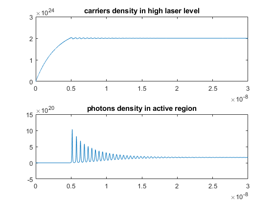

Large Signal Rate Equaiton
Dynamic characteristics of semiconductor bulk lasers and quantum well structure lasers are well described by the rate equation derived from the diagonal elements of the density matrix. The laser diode rate equations model the electrical and optical performance of a laser diode. This system of ordinary differential equations relates the number or density of photons and charge carriers (electrons) in the device to the injection current and to device and material parameters such as carrier lifetime, photon lifetime, and the optical gain.
Contents
Specify laser constants
tau_s = 3e-9; N0 = 1e24; A =1e-12; P0 = 1/(A*tau_s); TSPAN = [0 10]; Y0 =[0 0];
Solve the rate equation
[T,Y] = ode45(@(t,y)rate_equation(t,y),TSPAN,Y0);
% [T,Y]= ode45(@(t,y)rate_eq(t,y,tp,n0,L,Rsp,S,Ng,d,g,b,J,c,e),tspan,y0);
Plot the results
subplot(2,1,1) plot(T*tau_s ,Y(:,1)*N0) title('carriers density in high laser level') % carriers density in high laser level subplot(2,1,2) plot(T*tau_s ,Y(:,2)*P0) title('photons density in active region') % photons density in activer region % Reference https://www.physicsforums.com/threads/laser-rate-equation-ode-simulation-problem.292761/
Define the rate equation
function dy = rate_equation(~,y) dy = zeros(2,1); tau_s = 3e-9; % carriers lifetime tau_p = 1e-12; % photons lifetime A = 1e-12; % linear gain costant N0 = 1e24; % trasparency carries density V = 3.75e-14; % modal volume gamma = 1e-5; % gain compression factor q = 1.6e-19; % electron charge I0 = N0*q*V/tau_s; % trasparency current tau_norm = tau_s/tau_p; eta = A*tau_p*N0; % efficiency I = 2.5*I0; % pumping current ( try: from I0 to 3*I0 for example ...and see what happens!) dy(1)= I/I0 -y(2)*(y(1) - 1) -y(1); dy(2) = tau_norm*(y(2)*(eta*(y(1) - 1) -1) + gamma*eta*y(1)); % this is a very simple (dimensionless) and efficient version of the rate equations (note you % can add another equation, dy(3)(not coupled), that gives you the phase(t) of your laser! end